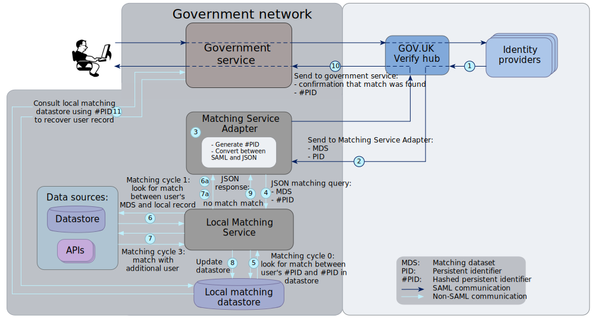

How a matching service works¶
Matching cycles¶
The matching process consists of 3 matching cycles. The cycles are progressive attempts to match the user to the correct record in the government service’s data sources:
Cycle 0: persistent identifier match
Cycle 1: matching dataset match
Cycle 3: user-asserted match
Note
Cycle 2 is not currently implemented.
The GOV.UK Verify hub issues a single call for matching cycles 0 and 1, then a subsequent call for matching cycle 3. In your matching strategy, you can run cycle 0 first. Then, if there is no match, you can run cycle 1 before returning the response to the Matching Service Adapter.
If there’s no match after the 3 cycles, you can create a new account for the user. Some services may decide to create a new account after only 1 matching cycle. This applies to services where users are creating new digital accounts rather than relying on existing government service data sources.
When an identity provider verifies a user’s identity, they send an assertion to the Matching Service Adapter via the hub. This assertion contains information about the user’s identity used in the different matching cycles. This information includes:
Cycle 0: persistent identifier match¶
This cycle works when a user has previously verified their identity with the same identity provider.
When an identity provider verifies a user’s identity, they assign a unique persistent identifier to that user. The identity provider sends the persistent identifier to the Matching Service Adapter, via the hub. The Matching Service Adapter then hashes the persistent identifier.
Note
A hashed persistent identifier refers to a combination of:
- the user
- the identity provider
- the service the user is trying to access (added when the persistent identifier is hashed)
Cycle 0 matches the user’s hashed persistent identifier to an existing hashed persistent identifier in the local matching datastore. This succeeds only if the user has previously been matched by your service with the same identity provider. The first time a new user is matched (with cycle 1), the hashed persistent identifier is written to the local matching datastore. It is then used for subsequent cycle 0 matches.
Cycle 1: matching dataset match¶
This cycle uses a limited set of information called the matching dataset to check for a match between the user and the correct record. The identity provider verifies the information in the matching dataset (except gender).
The matching dataset contains:
- name
- address
- date of birth
- gender (optional)
- historical data, if available, eg previous addresses
Note
It’s optional for users to provide gender. Where provided, gender is not verified by the identity provider. It’s used for matching purposes only.
The identity provider supplies the matching dataset. Your local matching service can use any or all the details in the matching dataset to confirm a match between the user and their existing record. Your service’s matching strategy specifies which details to use.
If the local matching service finds a match, it creates a correlation between the hashed persistent identifier and the existing record. This enables cycle 0 matching to occur during subsequent transactions.
Cycle 2: (not used)¶
Cycle 2 uses trusted attributes related to identity, for example, being a disabled badge holder, to enhance the matching process.
Note
Cycle 2 is not currently supported by GOV.UK Verify.
Cycle 3: user-asserted match¶
If cycle 1 finds more than 1 potential match, cycle 3 asks the user for some additional information, for example, driving licence number. The hub collects the additional information and sends it to the matching service. The local matching service then uses it to refine the match. When the local matching service finds a match, it saves the hashed persistent identifier in the matching datastore.
This cycle is defined in the government service policy and may not be required for all matches. The government service defines the information the hub collects and how to use it for matching. For example, you decide how many pieces of additional information to request. If you request 2 pieces of information and the user can only provide 1 of them, your matching rules specify whether to match this user.
Use this cycle to enhance cycle 1 and not as an alternative to cycle 1.
Matching cycles: message flow¶
This diagram shows the message flow for matching cycles 0, 1, and 3. The numbers identify each stage in the flow. See below for explanations.

Matching cycles 0, 1, and 3 |
For more details, see the diagrams: |
Note
In this example, an identity provider has already verified a user’s identity. For more details of this process, see the SAML message flow diagram.
- The identity provider sends the following information to the hub:
- the user’s identity information, known as the matching dataset
- a unique persistent identifier for the identity, created by the identity provider
- The hub forwards the matching dataset and persistent identifier to the Matching Service Adapter.
- The Matching Service Adapter hashes the persistent identifier to make it meaningless to other services.
- The Matching Service Adapter sends the hashed persistent identifier and the matching dataset to the local matching service.
- The local matching service runs cycle 0:
The local matching service tries to find a match between the user’s hashed persistent identifier and a hashed persistent identifier in the local matching datastore. If cycle 0 finds a match, go to step 9.
- If cycle 0 finds no match, a
no matchresponse is returned to the Matching Service Adapter (6a) and the local matching service runs cycle 1:
The local matching service tries to find a match between the user’s matching dataset and a record in government service data sources. If cycle 1 finds a match, go to step 8.
- If cycle 1 finds no match, a
no matchresponse is returned to the Matching Service Adapter (7a) and the local matching service runs cycle 3:
The hub asks the user to provide additional information, for example, their driving licence number and sends it to the Matching Service Adapter. If cycle 3 finds no match, the matching service can create a new account for the user, provided your matching service supports this feature and your user journey seeks explicit user consent.
- If cycle 1 or cycle 3 finds a match, the local matching service saves the hashed persistent identifier in the matching datastore along with the user’s record. Future matches with cycle 0 will use this data when the same user returns, having been verified by the same identity provider.
- The local matching service returns a JSON response,
match, to the Matching Service Adapter to indicate that a match was found. - The Matching Service Adapter creates a SAML response based on the JSON response, and forwards it to the government service via the GOV.UK Verify hub. The SAML response contains the hashed persistent identifier.
- The government service recovers the user’s record from the matching datastore using the the user’s persistent identifier. This allows the government service to interact with the user.